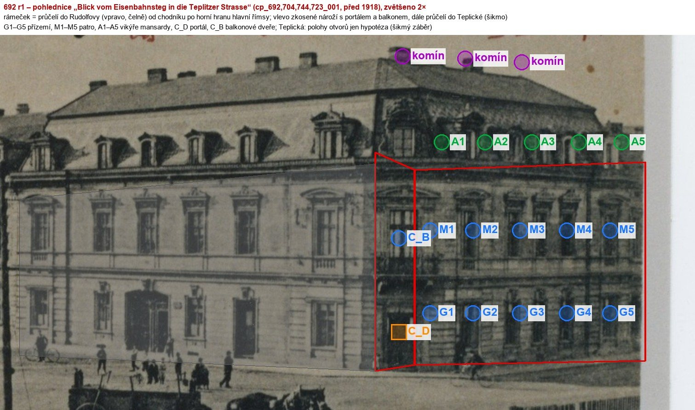
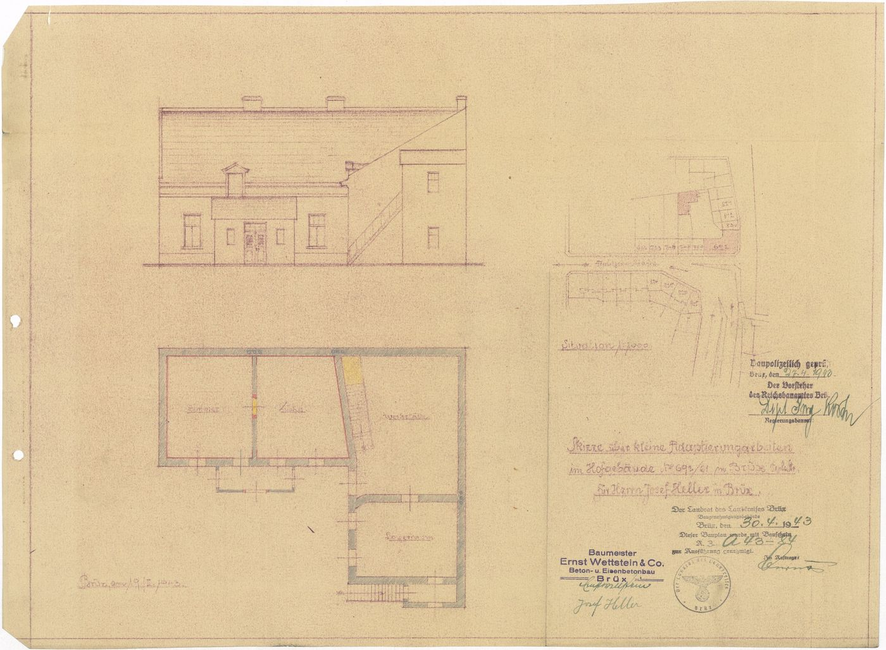
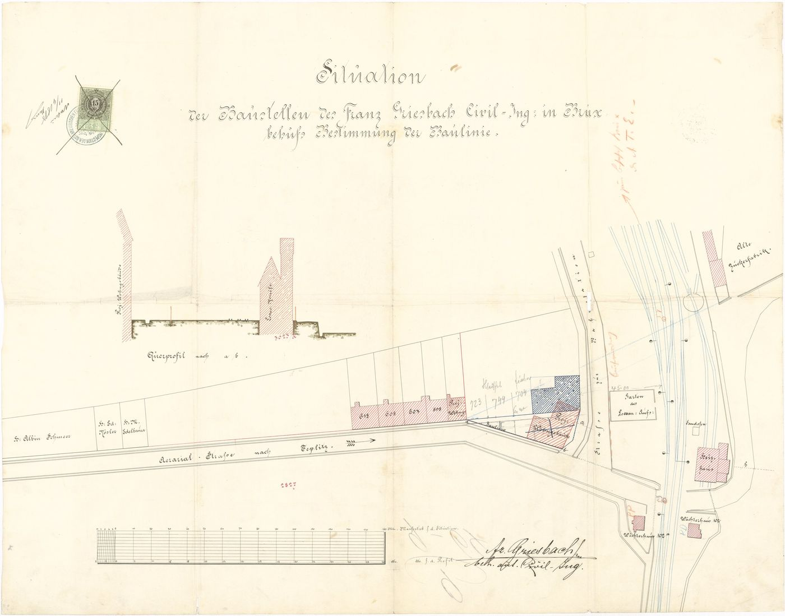
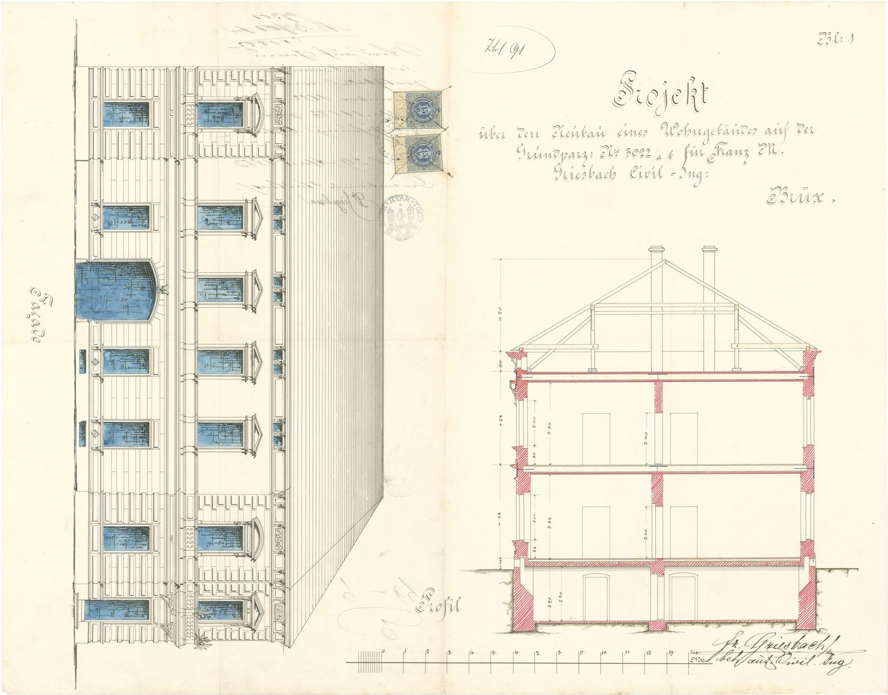
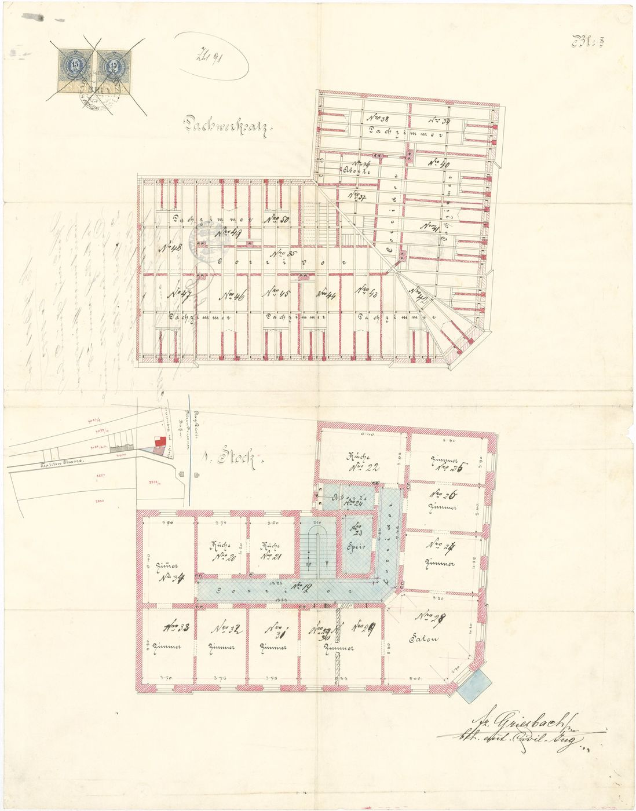
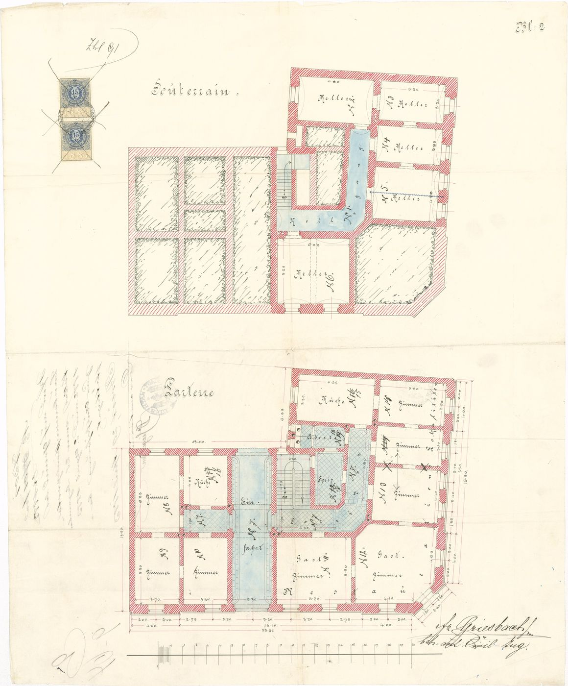
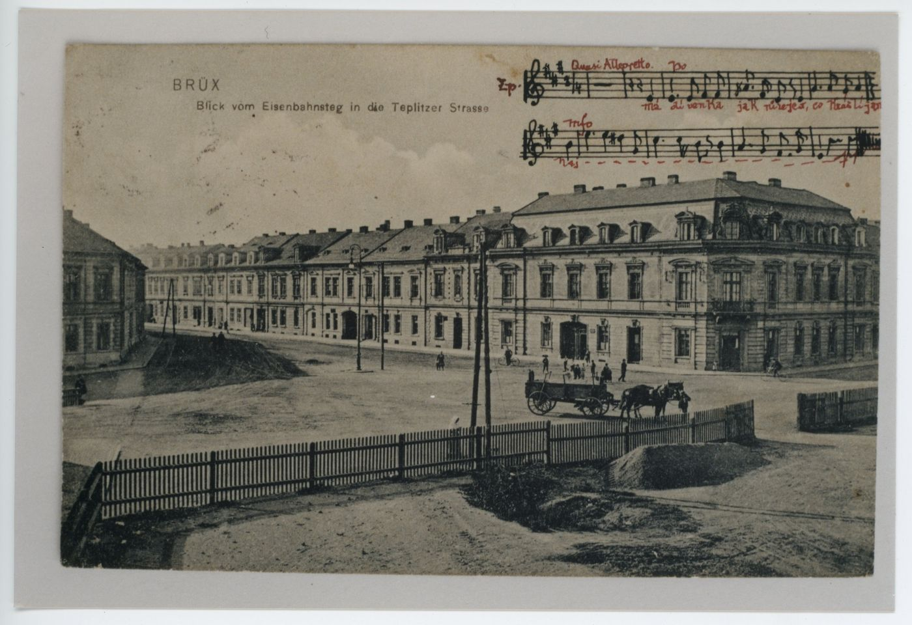

Identita domu
Upozornění – částečně hypotéza: Jen část domu je doložena fotografií; zbytek je odvozen z plánu nebo ze sousedního domu.
Nárožní dům Teplická × Rudolfova se zkoseným nárožím (obloukový portál, balkon), pět os do Rudolfovy, mansardová střecha s vikýři. Realizace podle pohlednice z železniční lávky (před 1918) se liší od projektu F. Griesbacha z roku 1891 (sedlová střecha).
Použité prameny: pohlednice „Blick vom Eisenbahnsteg in die Teplitzer Strasse“, projekt 1891 (fasáda, řez, krov, situace parcel Griesbach), skica dvorního objektu 1943, GIS půdorys.
Kde je dům na pramenech
Dům je v červeném rámečku, každý počítaný otvor nese ID z plánu modelu; sousedé jsou popsáni čísly. U domů jen z projektu je rámeček na výkresu pohledu.


Přílohy v databázi (6)
Všechny přílohy struktury 692 v databázi Libuše, načtené 23. 10. 2026 (jen čtení) a otevřené. Kliknutím otevřete větší náhled.


plán / výkres
SHA-256 3e2628c05ccc…


plán / výkres
SHA-256 c72f7ef17873…


plán / výkres
SHA-256 0c7cae5ed8c8…


plán / výkres
SHA-256 8e0baf63f9e6…


plán / výkres
SHA-256 45337bc5e938…


fotografie
SHA-256 67a7dd5b9440…
Geometrie
Upozornění – částečně hypotéza: Jen část domu je doložena fotografií; zbytek je odvozen z plánu nebo ze sousedního domu.
| Revize geometrie | r4 |
|---|---|
| Poloha | GIS půdorys id 1215 (ulice Rudolfova) |
| Šířka průčelí | 15,41 m |
| Výška okapu | 10,40 m |
| Podlaží | 2 + mansarda |
| Střecha podle pramenů | mansarda podle pohlednice – strmá spodní část s vikýři kolem celého nároží, zlom asi 2,9 m nad okapem, horní mírná část s valbami; 14 vikýřů (5 do Rudolfovy, vyšší nad nárožím, 8 do Teplické – jejich polohy jsou hypotéza); výšky odhad ze šikmého pohledu |
| Otvory / vikýře | 42 / 14 |
| Polygonů | 1549 |
| Kontrola podkroví a střechy (brána) | prošla: vlasové zásahy 0, nekryté zdivo 0,00 m², střecha nad prázdnem 0,00 m²; fasáda: passed_partial |
Otvory po fasádách (facade_evidence)
| Fasáda | Okna po podlažích | Dveře | Počítané | Hypotéza | Pramen | Poznámka |
|---|---|---|---|---|---|---|
| main | [5, 5] | 0 | 10 | 0 | photo | 5 os do Rudolfovy; výšky odhad (šikmý pohled shora) |
| dormers | [6] | 0 | 6 | 8 | photo | mansarda: 5 vikyru se stitky do Rudolfovy, vyssi zdobny vikyr nad narozim (balkon); do Teplicke vikyre s obloukovym zakoncenim nad osami - jejich polohy hypoteza jako osy fasady |
| corner | [1] | 1 | 2 | 0 | photo | zkosené nároží: obloukový portál + balkon s dveřmi |
| teplicka | [] | 0 | 0 | 16 | photo | 8 os se 2 vjezdy čitelné jen přibližně – polohy hypotéza |
Kontrolní pohledy


Textury
bez textur (hypotéza – jen prosté materiály)
Až Codex dodá texturovaný model, objeví se v prohlížeči nahoře volba Textury (Codex).
Hypotézy
Upozornění – částečně hypotéza: Jen část domu je doložena fotografií; zbytek je odvozen z plánu nebo ze sousedního domu.
Vše níže je model_hypothesis, provisional, locked: false.
- vysky podlazi (okap 10.4) odhad z pohlednice (projekt 1891: 4.25 + 4.25 + sklep 2.60 nad terenem ~1 m)
- polohy otvoru do Teplicke a na narozi = hypoteza z sikmeho zaberu pohlednice
- dvorni objekt (Hofgebaeude 1943) nemodelovan
- mansarda r4: zlom 2.9 m nad okapem (sklon ~72 st.), horni cast 20 st. - odhad z pohlednice (sikmy pohled shora), ne z kotovaneho pramene
- vikyre do Teplicke: polohy nad hypotetickymi osami fasady; tvar (obloukove zakonceni) a zdobny vikyr nad narozim zjednoduseny
Soubory
- Geometrie čp. 692, GLB
- Pracovní model: F:\MOST\output\rudolfova_street_claude_2026-10-23\houses\cp692\r4\cp_692_G_r4.blend
- Plán modelu: F:\MOST\output\rudolfova_street_claude_2026-10-23\houses\cp692\geometry_plan.json